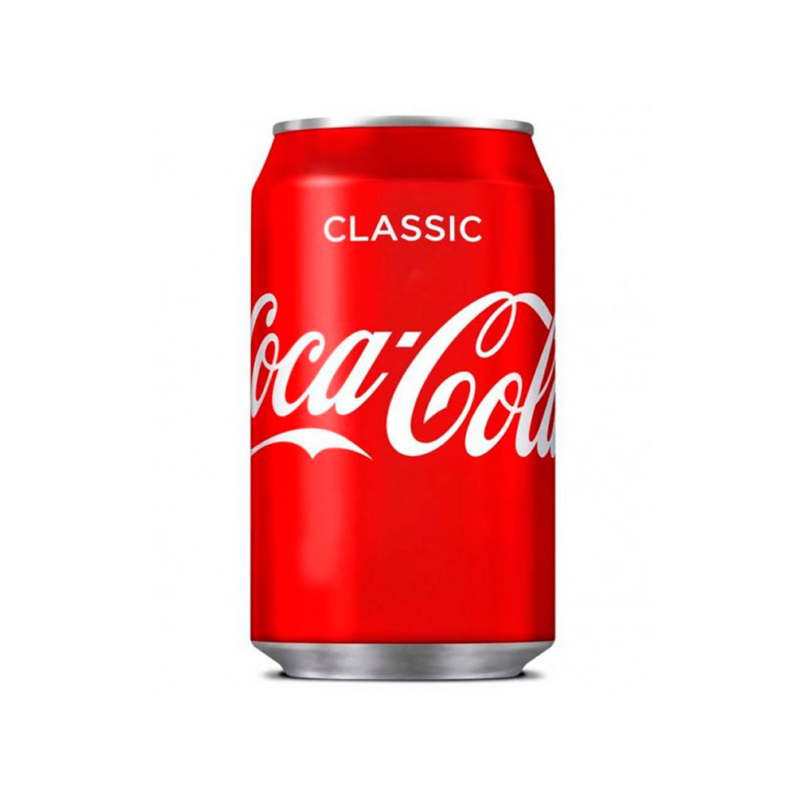
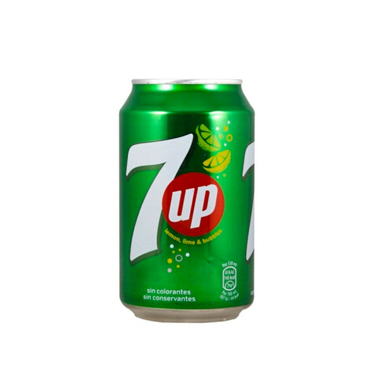
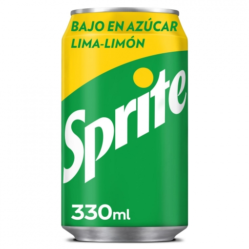

Selectores
¿Qué es?
Como hemos visto antes, en una estructura básica de jQuery hace falta llamar a un selector. Un selector de jQuery elige con precisión a qué elemento o elementos del árbol DOM va a llamar para realizar una acción. jQuery lo que hace es que cuando se llama, crea un objeto en JavaScript que permite manipular los elementos o nodos del árbol DOM que indique el selector.
La biblioteca de jQuery soporta muchos selectores y en gran parte son iguales que los de CSS3. Para conocer todos los selectores que existen en las últimas versiones de jQuery os dejo un enlace con la lista completa.
Podemos obviar los selectores que ya conocemos que serían los de identificador, de etiqueta y los de clase. Directamente vamos a pasar con los pseudoselectores y los filtros.
Pseudoselectores, qué palabra...
Los pseudoselectores son aquellos que marcan los elementos que están en un estado específico, por ejemplo, los que son el primer elemento de su tipo, o aquellos por los que el cursor les pasa por encima. Podemos distinguir los pseudoselectores en función de su especificación:
Según el índice
- odd: Selecciona los elementos o nodos impares de una lista.
- even: Selecciona los elementos o nodos pares de una lista.
Ejemplo:
- eq(x): Selecciona un elemento determinado de la lista pasándoselo como parámetro.
- first: Selecciona el primer elemento.
- last: Selecciona el último elemento.
- lt(x): Selecciona todos los elementos de la lista cuyo índice sea MENOR que el parámetro indicado.
- gt(x): Selecciona todos los elementos de la lista cuyo índice sea MAYOR que el parámetro indicado
- slice(x,y): Selecciona todos los elementos de la lista cuyo índice esté comprendido entre los parámetros.
Ejemplo:
  
Según el contenido
- contains(x): Selecciona todos los elementos o hijos del elemento que contiene el texto especificado como parámetro. CUIDADO! Distingue entre mayúsculas y minúsculas
- has(x): Selecciona todos los elementos que contiene el elemento hijo indicado como parámetro.
- not(x): Selecciona todos los elementos que no pertenece al selector especificado como parámetro.
Diferenciamos el contains y el has en que contains indica texto o palabras, y el has indica etiquetas.
Loren Lipsum
Crosten Ben
Loren Astralis
Según la herencia
jQuery nos permite seleccionar elementos del árbol DOM en función de la herencia que posee, por encima o por debajo.
- first-child: Selecciona el primer hijo del elemento especificado en el selector
- last-child: Selecciona el último hijo del elemento especificado en el selector
- nth-child(x): Selecciona el elemento hijo indicado por el índice empezando desde el principio.
- nth-last-child(x): Selecciona el elemento hijo indicado por el índice empezando desde el final.
Ejemplo:
Soy el primer hijo, ya no me hacen mucho caso en casa...
Yo soy el segundo hijo y suelo ser consentido.
Yo soy el hijo menor y si rompo algo, suelo culpar al mediano...
Soy el primer hijo, como mi padre chochea voy a buscarle una residencia.
Yo soy el segundo hijo y paso desapercibido en mi casa.
Yo soy el tercer hijo y soy el punching-ball de esta familia...
Yo soy el cuarto hijo y todavía no he estrenado calzoncillos...
Quinto hijo y la sudadera más nueva que tengo es de cuando salió el último disco de Queen.
OJO! Para los hijos no se empieza desde 0, sino desde 1.
Según su valor
- =: El valor del atributo es exactamente igual que el string indicado.
- !=: El valor del atributo es diferente al string indicado.
- ^=: El valor del atributo empieza por el string indicado.
- $=: El valor del atributo termina por el string indicado.
- *=: El valor del atributo contiene el string indicado.
- ~=: El valor del atributo contiene el string indicado o precedido/seguido por espacio
$("input[type!=text]")
$("img[alt^=Foto]")
$("img[alt$=s]")
$("img[alt*=a]")
$("img[alt~=corazado]")